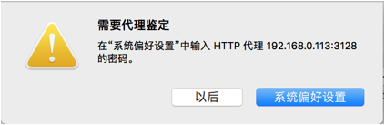
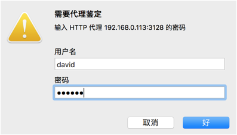

代理认证
proxy代理服务被广泛的使用，为了安全起见，可以在服务器上增加一层安全认证机制。这里使用htpasswd建立认证账号和密码
1、创建认证账号和密码
[root@localhost wj]# htpasswd -c /etc/squid/passwd david
New password:
Re-type new password:
Adding password for user david
2、修改认证文件，让其他用户可以读取
[root@localhost wj]# chmod o+r /etc/squid/passwd
3、查看认证服务文件
[root@localhost wj]# rpm -ql squid | grep ncsa_auth
/usr/lib/squid/ncsa_auth //记住这个地址，下面要用到
/usr/lib/squid/ncsa_auth //
记住这个地址，下面要用到
/usr/share/man/man8/ncsa_auth.8.gz
4、修改配置文件squid.conf
[root@localhost wj]# gedit /etc/squid/squid.conf
auth_param basic program /usr/lib/squid/ncsa_auth /etc/squid/passwd //账号位置、密码位置
auth_param basic program /usr/lib/squid/ncsa_auth /etc/squid/passwd //
账号位置、密码位置
auth_param basic children 5
auth_param basic realm you must author //欢迎词 上面的这三句话必须放在配置文件的开头
auth_param basic realm you must author //
欢迎词
上面的这三句话必须放在配置文件的开头
acl squid_user proxy_auth REQUIRED //acl语法
acl squid_user proxy_auth REQUIRED //acl
语法
http_access allow squid_user //只允许认证的人使用
http_access allow squid_user //
只允许认证的人使用
5、测试。重启服务后，用使用这个代理的电脑去上网，会弹窗要求认证
[root@localhost wj]# service squid restart
停止 squid：................ [确定]
停止
squid
：
................ [
确定
]
正在启动 squid：. [确定]
正在启动
. [


Copyright@david zhytwj2018@163.com